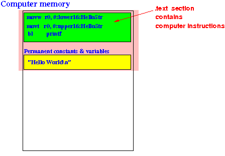

- The .text assembler directive
tells the ARM assembler to
start assembling
the line after the directive into
the .text section of the
computer program
- The .text section
of a computer program contains
computer instructions:
 That means:
- After the .text directive in an assembler program, we can write assembler instruction
Example: the Hello World program
.global main // ************************ Starting variable definition ***************** .data // *********************************************************************** HelloStr: // Label marking this location in memory .asciz "Hello World\n" // ASCII codes for the string // ************************ Starting computer instruction **************** .text // *********************************************************************** main: push {lr} // Save the return address on the stack push {fp} // Save the frame pointer on the stack // Explained later in CS255 /* ---------------------------------------- Pass the string to printf function ---------------------------------------- */ movw r0, #:lower16:HelloStr movt r0, #:upper16:HelloStr /* ---------------------------------------- Call the printf function ---------------------------------------- */ bl printf // Call printf function pop {fp} // Pop the frame pointer pop {lr} // Pop the return address // Explained later in CS255 .endAfter processing the .text directive, the assembler will:
- Translate
assembler instruction (nmemonics)
(the section highlighted in yellow)
into thier (binary) machine codes
(see:
ARM assembler code ) and
- Store the binary machine code in the
.text section of the program:
Comment:
- Humans do not read binary machine code easily
- For this reason, I usually put the assembler nmenonics (such as movw r0,#:lower16:HelloStr in the content)
- I have emphasized enough that the computer memory always store binary numbers that you should know that movw r0,#:lower16:HelloStr represents its binary machine code (see: ARM assembler code )
The assembler will keep doing this until it encounters a .data dirctive
So you can switch between .text and .data section as often as you wish in an assembler program
- We will learn about the assembler instruction that you write in the .text section later in the course (very soon).
- Computer programs consists of
functions which are
logical units of
computer instructions that
collectively perform a
well-defined task
Each function has a starting point where the first instruction of the function is located.
For example:
- An assembler program will
start running
in the
main( ) function
That means we need to know where the first instruction of the main( ) function is found in memory
(We can find the other instructions of the main( ) function when we found the first instruction, because the other instructions are found after the first instruction)
Later in the course, you will learn that the if-statement and the while-statement also have some special locations that we need to know.
So there are a number of important memory locations in a computer program we need to remember
- We need to remember these locations
because we need to
"go to" (= jump to) them
during the program execution
For example, when a method (such as main( ) is called, the program execution will go to (= jump to) the first instruction of the method.
- An assembler program will
start running
in the
main( ) function
- $64,000 question:
- How do we
find out
the memory location
where a method (function)
is stored ???
I.e.: how do we find the location of the first
- How do we
find out
the memory location
where a method (function)
is stored ???
- The assembler provides
a mechanism
to "mark" a
memory location that has
a special significance.
This mechanism is called a label (see: click here )
For example: in the Hello World program
main: // <----- This is a label !!! push {lr} // Save the return address on the stack push {fp} // Save the frame pointer on the stack // Explained later in CS255 /* ---------------------------------------- Pass the string to printf function ---------------------------------------- */ movw r0, #:lower16:HelloStr movt r0, #:upper16:HelloStr /* ---------------------------------------- Call the printf function ---------------------------------------- */ bl printf // Call printf function pop {fp} // Pop the frame pointer pop {lr} // Pop the return address // Explained later in CS255 .endNotice that:
- A label consists of:
- An identifier
followed by a
colon (:)
Example: main:
- An identifier
followed by a
colon (:)
- A label can be
added before
any instruction in the
assembler program
But:
- You should not add a label to an instruction if the location of that instruction has no special significance !!!
- A label consists of:
-
It is important that you
realize that the
assembler (= translation program)
will keep track of the
memory locations
that it uses to store
the translated machine code in
memory.
I.e.:
- The assembler knows the exact memory location that the next translated item will go in the computer memory !!!
When the assembler finds a label (such as main:) in the assembler program, the assembler will equate the label to the memory address where it will put the next translated item
To show you that the assembler records the memory locations using labels, I have added more labels into the Hello World assembler program:
.global L1, L2, L3 // Make identifier externally accessible ..... (this part is unchanged and omitted for brevity) main: push {lr} // Save the return address on the stack push {fp} // Save the return address on the stack // Explained later in CS255 /* ---------------------------------------- Pass the string to printf function ---------------------------------------- */ movw r0, #:lower16:HelloStr L1: movt r0, #:upper16:HelloStr // L1 marks this memory location /* ---------------------------------------- Call the printf function ---------------------------------------- */ L2: bl printf // L2 marks this memory location L3: nop // L3 marks this memory location pop {fp} // Pop the frame pointer pop {lr} // Pop the return address // Explained later in CS255 Stop: CodeEnd: nop .endNotice that we need to declare the labels (= identifiers used to identify memory locations) as .global so these identifiers can be accessed by EGTAPI/
- Example Program:
(Demo above code)

- Prog file: /home/cheung/demo/no-sim/labels.s on cs255host1
How to see the address locaton marked by the labels L1, L2, L3: (you can't do it for this program, I will demo this in class - this feature is available when you run your assembler projects)
- Run the program in EGTAPI
- Add the labels/identifiers L1, L2, L3 as breakpoints
- Then click on the labels/identifier to see their corresponding memory address
- Sometimes, the program execution
needs to
"go to" (or jump to) a
specific program location to proceed.
- For example, labels are used
to implement a
while-loop in
assembler programming
.... while ( x > 10 ) { ... ... ... <--- After execution reaches the END of the while loop, the execution must REPEAT from the START }We will learn later in the CS255 course how to "jump to" a specific location in a computer program
(This is how the high-level programming construct of a while-loop is implemented inside the computer !!!.
That's why we need assembler programming to reveal these high-level programming construct to you, so you can understand what is going on inside a computer....)